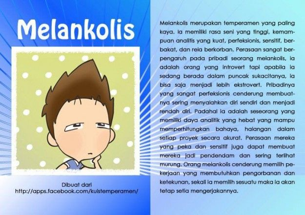
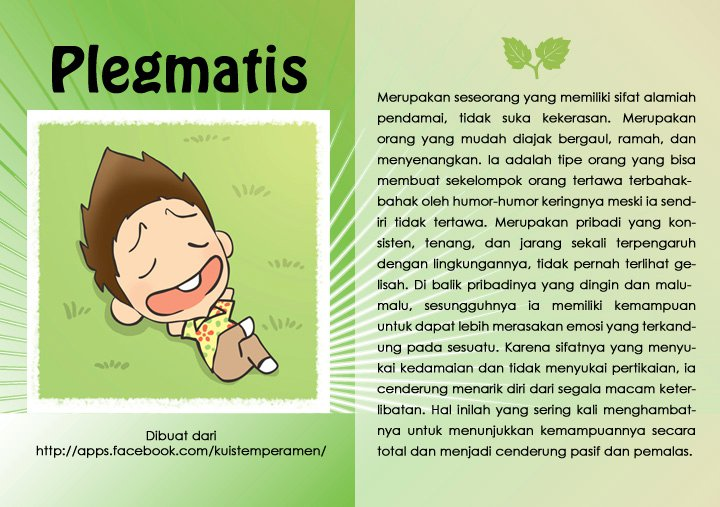

Dalam pembahsan kali ini kita akan melakukan test, test ini kita akan melakukan test sifat keperibadian apakah diri anda adalah seorang Sanguinis, melankolis, plegmatsi atau kolerik
Sebelum Masuk dalam test ini kita akan membahas apa itu Plegmatis, korelik, saguinis, dan melankolis
Tipe Kepribadian Melankolis yang sempurna merupakan tipe kepribadian yang memiliki karakter cenderung bersikap rapi, teratur, terencana, dan mampu mempertimbangkan segala sesuatu dengan melihat hal- hal kecil. Secara penampilan fisik, orang dengan tipe melankolis sempurna tampak rapi, baju mulus, sepatu bersih, barang bawaan tertata rapi, buku tertata dengan rapi, tulisan rapi.
Orang dengan tipe ini bisa dilihat dari kondisi kamarnya yang rapi dan bersih. Secara akademis tipe melankolis tergolong pandai dan cerdas. Orang dengan tipe melankolis suka mengatur orang lain, suka mengingatkan orang lain jika tidak sesuai, suka mengontrol semuanya sendiri, tidak mau kalah, bicaranya dingin, sesuai aturan atau baku. Selalu ingin tahu dan mengejar jawaban sampai mendalam karena menginginkan kesempurnaan.
Kelemahan melankolis : Cenderung selalu mendahulukan kepentingan orang lain diatas kepentingannya sendiri sampai melupakan kebutuhan dirinya sendiri. Merasa tidak puas apabila sesuatu berjalan tidak sesuai kehendaknya atau yang dia rasa benar. Pemikirannya yang terlalu sempurna terkadang dianggap terlalu rumit dan tidak terlalu perlu oleh orang disekitarnya. Dianggap terlalu serius oleh orang disekitarnya.
Sanguinis yang populer merupakan tipe karakter kepribadian yang suka menjadi bahan perhatian, ingin selalu disenangi oleh orang lain, menyukai kepopuleran, memiliki rasa percaya diri yan gtinggi dan senang menjadi pusat perhatian. Seorang sanguinis selalu senang dalam situasi yang gembira, pesta- pesta, berkumpul dengan teman- teman dalam kondisi yang ramai. Senang terhadap aktivitas kebersamaan yang menyenangkan, namun hidupnya tidak teratur. Orang dengan tipe sanguinis susah berkonsentrasi dan diajak serius. Selalu cenderung memberikan keputusan setelah berpikir pendek.
Kelemahan Sanguinis : Orang dengan tipe sangunis cenderung tidak terorganisir, tidak mudah mengingat hal hal yang terperinci, kurang serius dalam apapun, mempercayakan pada orang lain untuk melakukan pekerjaan, terlalu mudah ditipu dan kekanak- kanakan, mempunyai ide cemerlang namun tidak mampu melaksanakan sampai akhir, merasa sebagai orang tanpa kesalahan, berbicara terlalu banyak, mementingkan diri sendiri, mempunyai ingatan yang belum dikembangkan, pelupa, suka menyela dan menjawab untuk orang lain, tidak tertip dan tidak dewasa.
Koleris yang kuat merupakan tipe kepribadian yang tegas dan tipe seorang pemimpin. Koleris sangat suka mengatur, suka petualangan, suka tantangan baru, memiliki ketegasan dalam menentukan keputusan, tidak mudah menyerah, tidak mudah mengalah. Tipe koleris menjadi sosok yang selalu diidam- idamkan oleh orang lain karena terlihat sangat keren dan kuat dari luar. Namun dibalik semua kesempurnaan dirinya dan jiwa kepemimpinannya yang besar, orang koleris cenderung jarang bersenang- senang.
Kelemahan Koleris : Terlalu terpacu dan menyukai pada hal hal serius sehingga melupakan kebutuhan akan waktu yang santai dan menyenangkan. Kehidupannya terpacu pada target, tujuan dan hasil.
Seseorang dengan tipe karakter plegmatis menunjukkan pribadi yang mudah diatur, cenderung diam dan kalem, suka mengalah, memiliki rasa toleransi yang tinggi, mudah untuk disuruh dan selalu mau melakukan, suka mengalah, tidak menyukai konflik. Orang dengan tipe ini suka dengan kehidupan yang damai- damai saja dan tenang. Apabila dihadapkan pada suatu masalah, maka dia akan mencari solusi dengan cara damai dan diselesaikan dengan tenang. Tipe plegmatis mampu bersabar dalam kondisi apapun. Apabila disuruh untuk mengambil keputusan, mengalami kesulitas dan cenderung menunda- nunda.
Kelemahan Plegmatis : Cenderung mengalir apa adanya dan terkesan tidak memiliki impian atau pendirian hidup yang tegas. Sulit menentukan pilihan. Tidak pandai memberikan masukan atau gagasan baru.
A.Terserah yang penting enak
B.Minta di jelasin tiap menunya
C.Apapun makanannya yang penting kumpul
D.Pilih menu termahal
A.Langganan
B.Survey dulu di internet
C.Murah dan enak
D.Coba tempat baru
A.Suka telat
B.Tepat waktu
C.Lupa kalau ada janji
Datang sebelum waktunya
A.Bebas
B.Rapi
C.Warna menonjol
D.Polos/1 warna
A.Musik santai
B.Musik sedih
C.Musik semangat
D.Musik keras
A.Biasa aja
B.Menjaga sepenuh hati
C.Pamer
D.Manfaatkan secara maximal
A,Main catur
B.Membaca buku
C.Bernyani
D.Olah raga
A.Sungkan
B.Pikir matang matang
C.Ceplas-ceplos
D.Blak blakan
A.Jadi dosen
B.Penulis
C.Artis
D.President
A.Keluar dari zona nyaman
B.Dikritik
C.Ditolak
A.Dimanfaatkan
A>Menghindari konflik
B.Kesempurnaan
C.Kebersamaan
D.Target
A.Ajak damai
B.Kabur
C.Hanya bisa berteriak
D.Berkelahi
Kritera test ini adalah untuk mengetes sifat pibadi anda, cara penilaian adalah jika nilai anda diatas 12 maka anda seorang plegmatis, jika nilai anda diatas diatas 21 makan anda seorang Melankolis, jika nilai anda 31 maka anda seorang Sanguinis, jika nilai anda diatas 41 maka anda seorang Koleris.
Jln.Pasir Kaliki No.25-27
Bandung
Lihat : Google Maps
Website :Binus Bandung